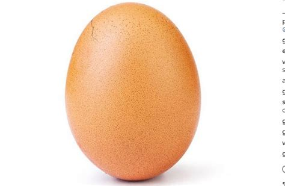
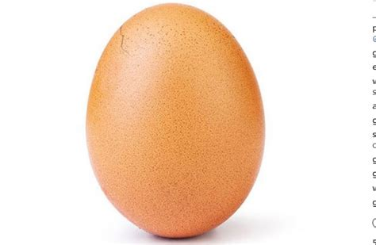

Весьма полезны для уток отварные овощи: картофель, морковь, свекла. Они дают достаточно витаминов и минералов. Недостаток минералов, пополняемый за счет животной пищи, необходимо компенсировать, например, яичной скорлупой и ракушками. Неплохо поедается смесь сушеных трав (одуванчик, клевер, крапива, люцерна) – это, пожалуй, лучший источник витаминов. Давать уткам такой корм можно и не измельченным, они с легкостью отрывают сухие листья. Овощи с успехом заменяют овощные отходы, непригодные для человека.
Обязательно в рационе уток должны быть белки, их источником могут стать вареные яйца, рыба, мясная или рыбная мука, нежирный творог. Вареные яйца чистить от скорлупы необязательно, их можно покрошить прямо в скорлупе. В белковых ингредиентах не должно быть осколков костей, а подавать их следует с зерновой смесью. В сильные холода вареное или отпаренное зерно лучше заменять сухим, иначе оно смерзается в совершенно недоступную птицам массу.
 
